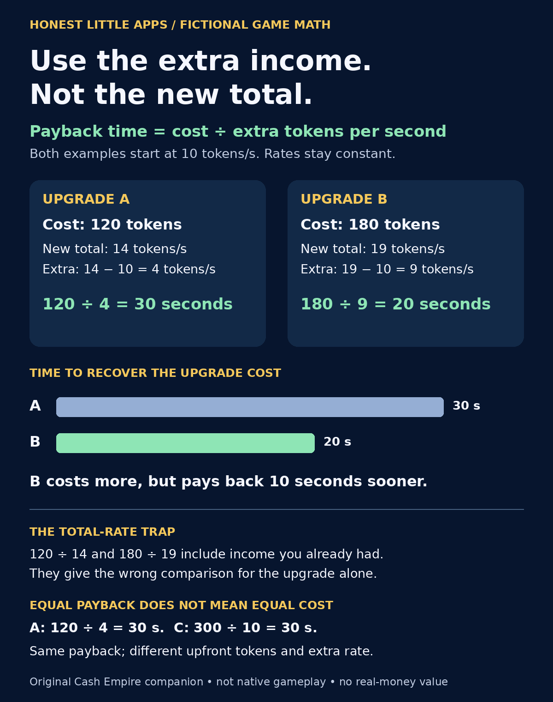

Updated November 2026 · Free calculator, works for any idle game
Idle game offline earnings calculatorWhat could eight hours earn?
An idle game offline earnings calculator for any clicker, with the three ways games cap it, then twelve questions people ask about idle games and ours.
| Offline rule | What you get | What to compare |
|---|---|---|
| Full rate, capped window | 100% of income for N hours, then nothing | Hours away versus the cap |
| Reduced rate, no cap | A percentage of income for as long as you are gone | Offline rate versus active rate |
| Full rate, pay to extend | 100% for a window; a purchase lengthens it | Included hours versus the extended window |
Offline earnings calculator
Income per second from your game's stats screen, hours away, and the rule your game uses. Works for any idle game; the numbers are yours, not ours.
Idle games display big numbers in short form (1.25K, 3.4M, 2.1B). Type the plain number here. Compare this estimate with your game’s return summary. A difference may reflect a different cap, rate or bonus.
Which upgrade earns its cost back sooner?
Compare the extra production an upgrade adds. Dividing by the new total also counts production you already owned. This original visual uses invented tokens and fixed rates, not prices, screenshots or progression data from the native game.

Download the PNG visual · Download the scalable SVG. Both are the same original comparison.


The complete comparison in text
Start at 10 tokens per second. Assume both upgrades are available immediately, the added rate stays constant and there are no caps, bonuses, resets or further purchases.
- A: cost 120 tokens; new total 14 tokens/s; extra 14 −10 =4 tokens/s. Payback 120 ÷4 =30 seconds.
- B: cost 180 tokens; new total 19 tokens/s; extra 19 −10 =9 tokens/s. Payback 180 ÷9 =20 seconds.
- C, an equal-payback example: cost 300 tokens; new total 20 tokens/s; extra 20 −10 =10 tokens/s. Payback 300 ÷10 =30 seconds, matching A despite a different upfront cost and added rate.
Spot the total-rate trap
Using 120 ÷14 gives about 8.57 seconds, while 180 ÷19 gives about 9.47 seconds. That method incorrectly makes A look faster. Subtract the existing 10 tokens/s before dividing: A takes 30 seconds; B takes 20 seconds.
Does faster payback always settle the choice?
No. In this simplified example the token gain after a chosen wait is extra rate × seconds − cost. After 15 seconds, A is 60 tokens below its cost and B is 45 below. After 30 seconds, A has recovered its cost and B is 90 tokens above it. A and C both recover their costs at 30 seconds; at 60 seconds their added production minus cost is 120 and 300 tokens respectively. A 150-token budget can afford A but cannot afford B or C. A shortest-payback comparison alone does not test affordability, waiting to buy, future upgrades, spending limits or a game's actual mechanics.
Publisher disclosure: Honest Little Apps publishes Cash Empire Clicker and this separate educational companion. The visual is not native gameplay or an independent review. Cash Empire is free to play with optional one-time in-app purchases; check Apple for the current local offer. No app is needed for this comparison, and these tokens have no real-money value.
Buy the upgrade or save for the unlock?
Race two strategies to the same fictional token balance. Saving keeps your current rate. Buying spends tokens on one boost as soon as you can afford it.
Each tick adds a whole payout. A boost can be bought between ticks and first pays on the next tick. This browser example uses invented prices. It assumes no caps, resets or extra purchases.
Before managers, after managers

 TappingAutomated
TappingAutomatedLeft: the first hour, one printer, your thumb. Right: assets, research and managers doing it while you are away. Drag.
Tap forever
Manual tapping gives you a direct way to build up resources while you play.
Pay to skip waiting
In games that sell longer offline windows, compare the included hours with the length of your usual break.
Automate, then prestige
Managers run the assets, research doubles them, and the IPO Reset shows your multiplier now versus after before you confirm. That is how Cash Empire Clicker is built, and the listing says everything can be earned free.
Honest limits
The calculator is arithmetic, not a peek inside any game's code; it is only as right as the rule you pick. We make Cash Empire Clicker and the listing does not publish the length of its offline window, so we do not either. All money in it is fictional and it has no cash-outs, gambling or betting. One-time purchases exist and are optional; if a child will play, Ask to Buy and Family Sharing on Apple's site explain how to keep purchases behind your approval.
Start on your iPhoneTwelve questions, answered
How do offline earnings work in idle games?
The game records the time you closed it, and when you return it multiplies your income per second by the seconds away, then usually applies a cap or a percentage. Some pay 100% for a few hours then nothing; some pay a reduced rate forever; some pay full rate but only for a fixed window. The calculator above lets you model any of those. Cash Empire Clicker shows a return summary when you come back and a home-screen widget with what printed while you were away; one-time purchases can extend the offline window, per the listing.
Is there a cap on offline earnings in Cash Empire Clicker?
The listing says assets keep producing while you are away and that certain one-time purchases add "longer offline earnings", which tells you a window exists without stating its length. We do not quote numbers the listing does not give. Use the calculator with a cap of 8 hours as a conservative guess and adjust once you have seen your own return summary.
When should I prestige in an idle game?
When the multiplier you would get after resetting beats what you would earn by continuing over the same stretch of time. Most games hide that arithmetic; Cash Empire Clicker's IPO Reset shows your multiplier now versus after before you confirm, which is the honest way to do it. A rule of thumb across the genre: prestige when progress to the next asset tier has slowed to hours rather than minutes.
Are idle clicker games a waste of time?
They are a low-attention pastime, like a crossword with numbers. Where they go wrong is forced ads and timers built to make you pay to skip waiting. Cash Empire Clicker's listing says no forced ads, no launch paywall and no account needed; everything can be earned by playing free, with optional one-time purchases. That is the version of the genre we are willing to make.
Is Cash Empire Clicker real money?
No. The listing is blunt about it: it is an arcade game, it does not offer real money, gambling, betting, cash-outs or investment services, and in-game currency has no real-world value. Market Calls show the odds before you choose, but nothing you win or lose exists outside the game.
Does it have ads?
No forced ads, per the listing. We would say so if there were.
What is the fastest way to grow early?
Buy the asset with the shortest payback time, not the most expensive one you can afford. The "best next" card shows cost, income gained and payback time for exactly this reason. Then hire the manager for your top earner so you can stop tapping it.
What does research do?
Every asset has eight research projects that double its income, which open as you own more of that asset. Ink Formula research makes your taps scale with your empire, so tapping stays worth something late on.
Can my kid play it?
It is a tycoon game with fictional money and optional in-app purchases. If a child will play, turn on Ask to Buy in Family Sharing so purchases need your approval, and know that the game does not offer gambling or cash-outs. Apple's guides for Ask to Buy and sharing purchases are linked below. We make the game; read the App Store listing yourself before deciding.
Does it work offline?
Yes for play; the listing says no account is needed and sign-in is optional, used for cloud backup and the global leaderboard. Leaderboards and backup obviously need a connection.
What is the Arcade?
Three free skill games on cooldowns: Vault Cracker (stop the dial in the gold zone), Counterfeit Catcher (tap the fakes) and Cash Stack (build the tallest tower). Rewards are shown before you play.
How long does it take to finish?
The listing says reaching the top stages takes days, not minutes, with 15 empire stages from Broken Printer to Omniversal Treasury. Prestige resets are part of the design, so "finish" is more like "Legacy Crown".
See what your next upgrade earns.
In Cash Empire Clicker, the Next Upgrade card shows a purchase’s cost, the income it adds and its payback time. When you return, the offline summary shows which upgrades you can afford.
Free to download on iPhone and iPad. Optional one-time purchases offer longer offline earnings, permanent cash multipliers and extra skins. All coins are fictional.
Open on your iPhone
On another device? Scan with your iPhone Camera, then tap the link.

Open Cash Empire Clicker on the App Store
The code opens the App Store. It does not transfer entries or results from this page.